Плаж Балчик - Пътеводител
За Балчик
Балчик е дестинация по българското Черноморие. Това място предлага пясъчен плаж, летни удобства, което го прави идеално за плажни туристи, семейства. Българското Черноморие простира на 378 километра и Балчик има своя уникален характер и атракции.
Какво да очаквате
Градският плаж на Balchik е достъпен за местни и туристи с добра основна инфраструктура. Градът предлага истински български ресторанти с местна кухня на разумни цени, магазини, пазари и възможност да видите ежедневния живот на местното население. Атмосферата е по-автентична от курортната.
Как да стигнете и практична информация
Balchik е достъпен с редовни автобуси от основните градове. Настаняването включва градски хотели и частни квартири (40-100 лв/нощувка). Градът предлага пълна инфраструктура - банки, аптеки, магазини, болница. Цените за храна и услуги са по-ниски от курортните зони.
Близки атракции
Освен плажа, посетителите могат да разгледат околните забележителности. Българският бряг съчетава природна красота с исторически места, традиционни села и възможности за туризъм, водни спортове и културни преживявания.
Най-добро време за посещение
Юни и септември предлагат отлично време с по-малко туристи и по-добри цени в сравнение с пиковите юли-август. Водата е достатъчно топла за комфортно плуване от средата на юни до средата на септември. За най-тихото преживяване и най-добра стойност, помислете за края на май или началото на октомври.
Съвети за посетители
Фотогалерия
Разгледайте нашата колекция от снимки от Балчик, показващи плажа, съоръженията и атмосферата. Тези автентични изображения ви помагат да разберете какво да очаквате и да планирате посещението си ефективно.
Сграда в Балчик
Езерото
Красива градина
Дева Мария
Вратата към Гетсиманската градина
Кактуси- 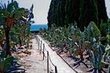
Кактусовата градина
Петунии
Старинни делви
Крайбрежната ивица
Плажа
Резиденции
Воден басейн
Балчик045- 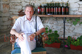
Продавач на вино
Балчик53- 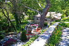
Балчик054 - 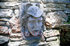
Чешма
Зелена приказка- 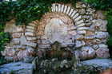
Мраморна чешма
Глинени делви
Изглед
Красиво кътче
Ботаническата градина
Малка градинка
Жълта водна лилия
Розова водна лилия
Балчик
Плажната ивица
Балчик
Лабиринт
Каменни стълби
Панорамна гледка
Изглед към морето на Балчик- 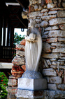
Статуя на Дева Мария
Различни мотиви- 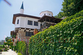
Дворецът "Тихото гнездо" - 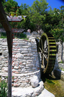
Вила Пещерата - 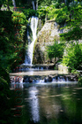
Водопадът в Двореца
Нимфеумът в градината
Балчик
Под Нимфариума
Параклис "Света Богородица"
Кръст- 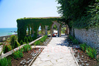
Нимфeuум
Воден кръст- 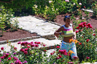
Розовта градина
Ухаеща магнолия- 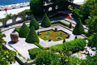
Езеро с водни лилии
Гетсиманската градина
Ученици
Малка къщичка- 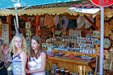
Магазин за сувенири